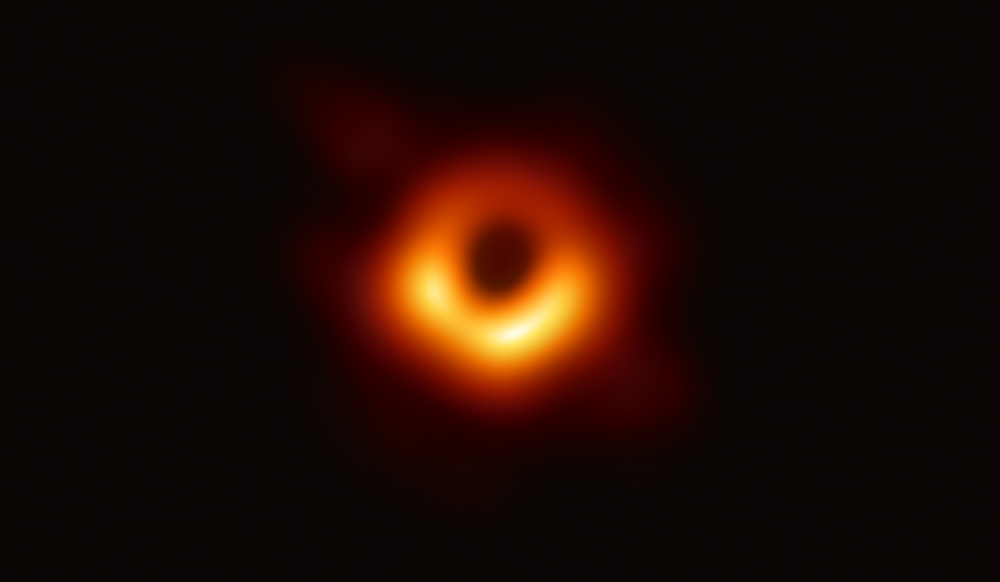
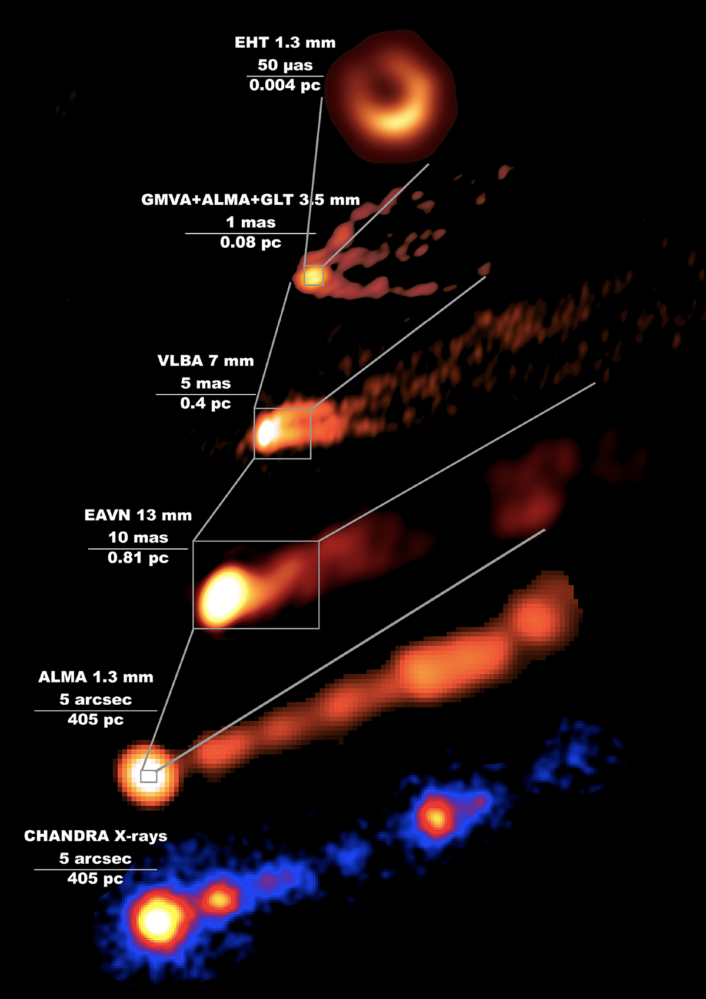
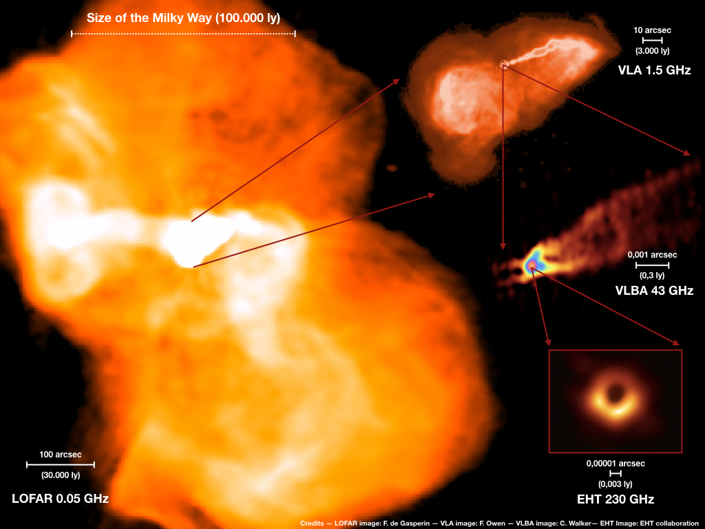
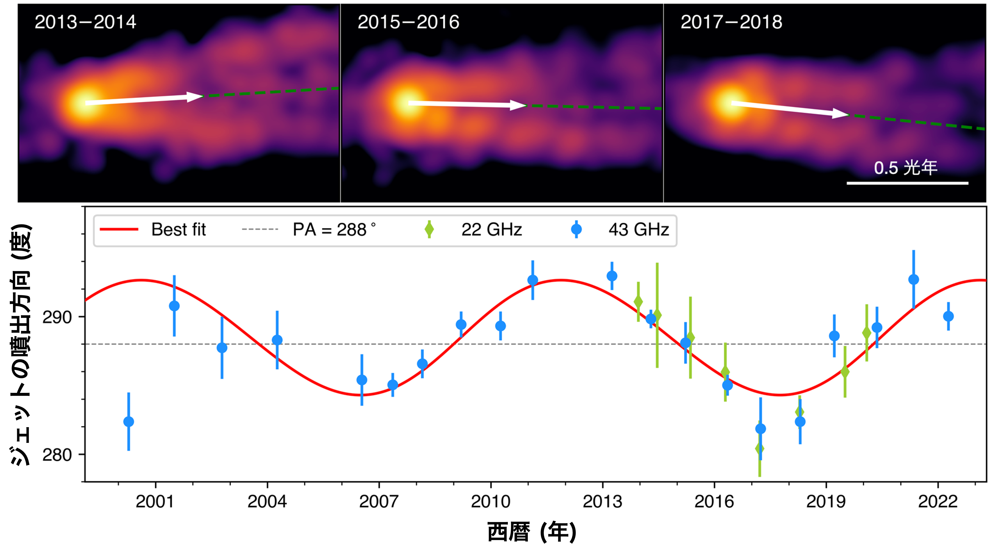
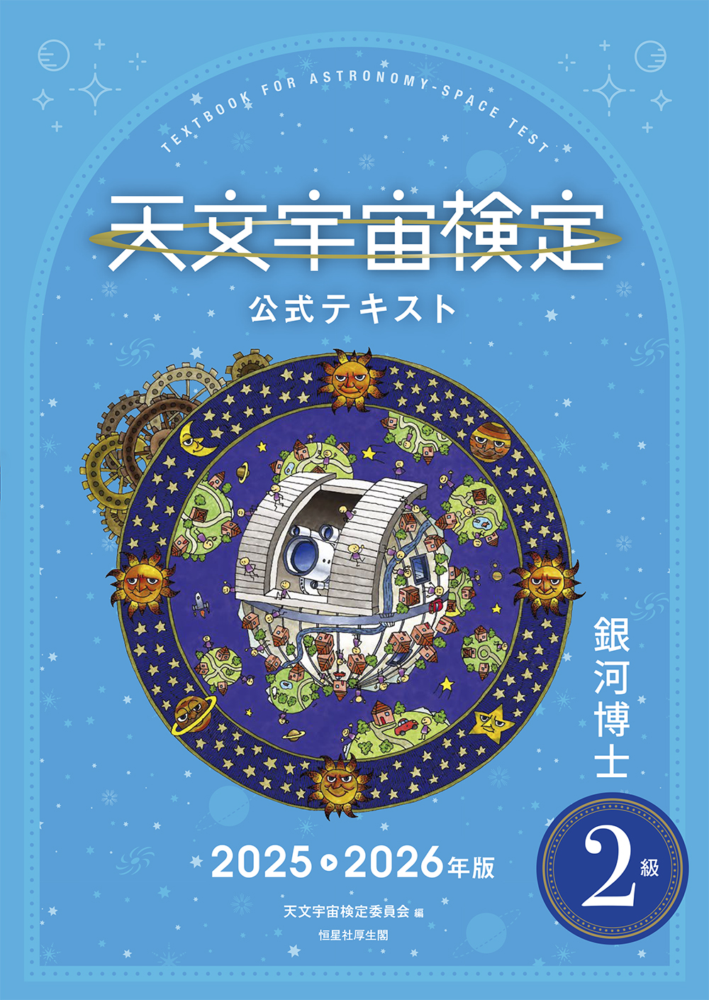
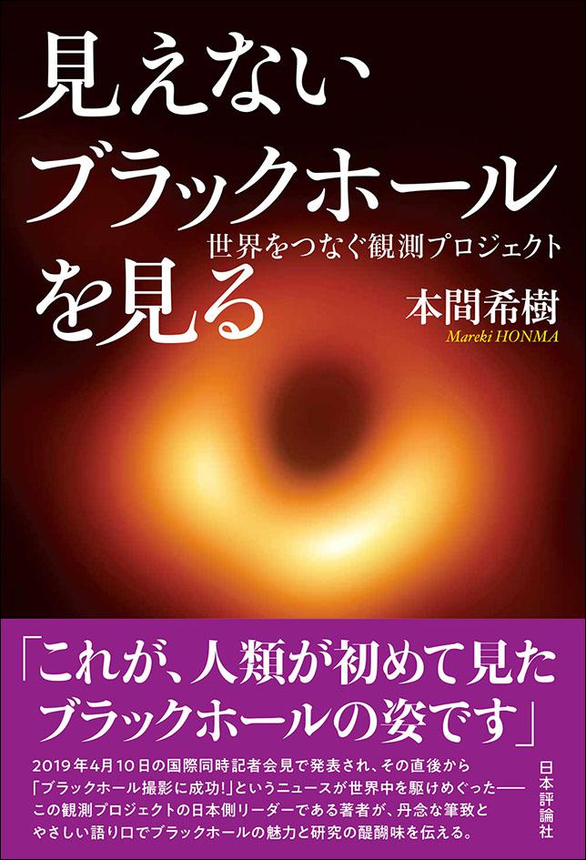
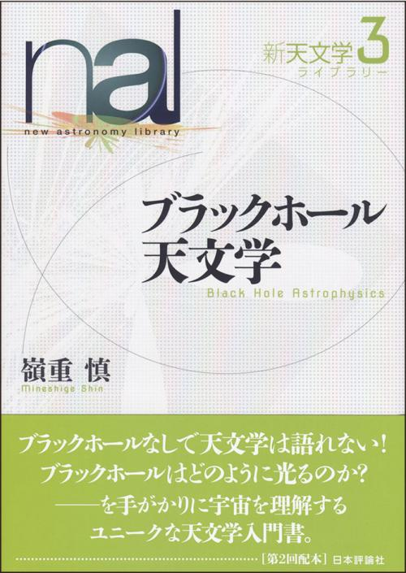
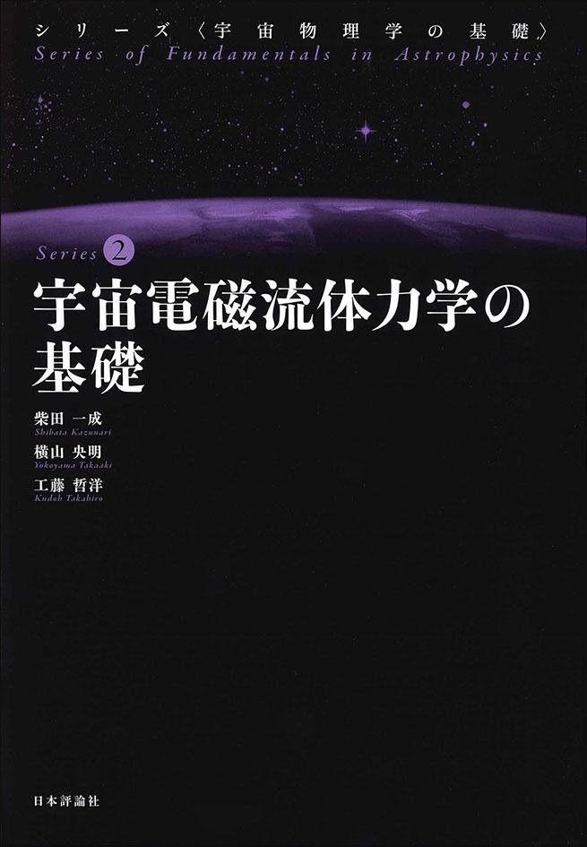
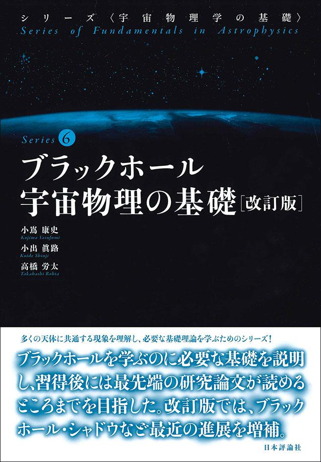
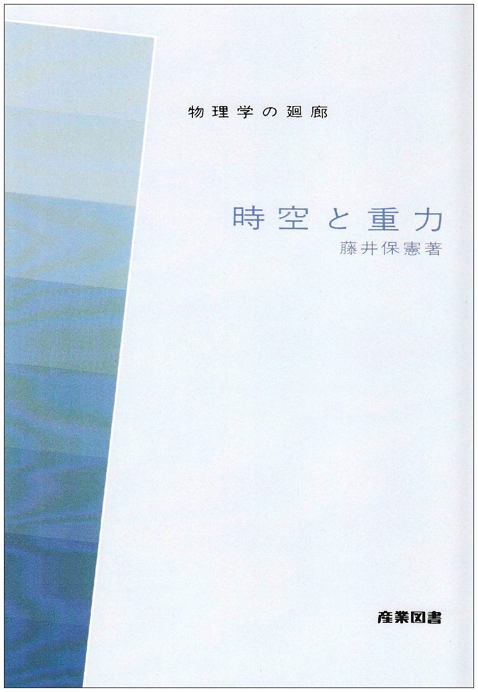

ブラックホール
ブラックホール、特に超大質量ブラックホールと、 そこから形成される相対論的ジェットについて情報をまとめる。 ブラックホールそのものの物理だけでなく、 実際の観測例、シミュレーション、関連するウェブサイトや書籍についても紹介する。
物理
ブラックホールは、一般相対性理論によって記述される非常に強い重力場を持つ天体である。 特に銀河中心に存在する超大質量ブラックホールは、 太陽質量の \(10^6\)–\(10^{10}\) 倍程度の質量を持つ。
ブラックホールへ落下するガスは角運動量を持つため、 多くの場合は直接ブラックホールへ落ちるのではなく、 降着円盤を形成する。 円盤内部では磁場や乱流が角運動量輸送に重要な役割を果たし、 ガスは徐々に内側へ降着していく。
一方で、降着する物質のエネルギーのすべてがブラックホールへ吸収されるわけではない。 ブラックホール近傍では強力な放射、アウトフロー、 そして光速近くまで加速された相対論的ジェットが形成されることがある。
ジェットの形成にはブラックホールのスピンと磁場が重要であると考えられている。 特に、回転するブラックホールから磁場を介して回転エネルギーを取り出す Blandford–Znajek機構は、 強力な相対論的ジェットを説明する代表的なモデルである。
観測
ブラックホールに関する面白い観測例をいくつか紹介する。
世界初のブラックホールシャドウ観測

EHT Collaboration
EHTが観測したM87銀河中心のブラックホールシャドウ。 ブラックホール近傍の高温プラズマから放射された電波が、 ブラックホールの非常に強い重力場によって曲げられることで リング状の構造が形成されている。
2019年に公開されたこの画像は、 ブラックホール近傍を事象の地平面に近い空間スケールで 直接観測した最初の例となった。
M87 ジェットのズームイン

電波やX線など、さまざまな観測装置によって得られた M87のブラックホールとジェットの描像。
特にブラックホールから比較的近い領域では、 広がったジェットが徐々に細く収束していく構造が観測されており、 ジェットの加速・収束機構を理解するうえで非常に興味深い。
M87のさらに大スケール

M87をさらに大きなスケールで電波観測すると、 現在の細いジェットだけでなく、 周囲に大きく広がった電波構造が見える。
これらには現在あるいは過去のジェット活動によって供給された 相対論的電子や磁場が含まれていると考えられ、 ブラックホール活動の長期的な履歴を調べる手がかりとなる。
またVLBIによる高分解能観測では、 ジェットの縁が明るく中心部が比較的暗い limb-brightened構造が見られる。 ジェット内部の速度構造や磁場配置との関係が議論されている。
ジェットの歳差運動

長期間のVLBI観測から、 M87ジェットの噴出方向が時間とともに周期的に変化していることが示された。
このジェットの歳差運動は、 ブラックホールのスピンによって生じる Lense–Thirring効果と関連している可能性があり、 ブラックホールの回転を間接的に調べる手段として注目されている。
シミュレーション
ブラックホール近傍では、 強い重力場、磁場、相対論的なプラズマ運動が同時に関わる。 そのため理論研究では、 一般相対論的磁気流体力学 （GRMHD: General Relativistic Magnetohydrodynamics） シミュレーションが広く用いられている。
GRMHDシミュレーションでは、 ブラックホールへのガス降着、 磁場の増幅、 降着円盤や高温コロナの形成、 さらにブラックホール近傍からのジェット形成などを 数値的に追跡することができる。
またシミュレーション結果に対して 一般相対論的な放射輸送計算を行うことで、 EHTで観測されるようなブラックホール画像を人工的に作り、 実際の観測結果と比較する研究も行われている。
関連サイト
EHT-Japan
EHTの日本グループによるウェブサイト。 ブラックホール撮像、M87やSgr A*の研究、 最新のプレスリリースなどが公開されている。 研究成果の図も非常にかっこいい。
MOJAVE
VLBIによって活動銀河核ジェットを長期間観測しているプロジェクト。 高分解能電波画像だけでなく、 ジェットの時間変化、spectral index、偏光なども公開されている。
ジェット成分の超光速運動、 加速・減速、 磁場構造、 ジェットの時間発展などを調べることができる。
An Atlas of DRAGNs
電波銀河やジェット天体の大スケール電波画像を集めたアトラス。 双極ジェット、電波ローブ、ホットスポットなど、 さまざまな形態の電波銀河を見ることができる。
天体ごとにジェットの形が大きく異なっており、 眺めているだけでも面白い。
関連書籍
天文


見えないブラックホールを見る
EHT Japanのリーダー本間先生の最新書籍。ブラックホールの特徴、研究史に始まり、どのような過程を経てブラックホール撮像に漕ぎ着けたのか、将来の研究などについて平易かつ詳細に記載されている良書。

ブラックホール天文学
ブラックホール周辺の降着円盤の物理を主眼に最新研究まで触れている。学部時代の終盤はこれと宇宙電磁流体力学の基礎をバイブルとしていた。(現在の研究ではほぼ使っていないが)


物理

「時空と重力」藤井保憲
一般相対論に入門したい場合、これが一番。薄くストレートでわかりやすい。私は他の分厚い本で挫折していたが、20歳直前の初夏にこれを読み切ることができた。思い出の一冊。
公式ページはなさそう。
関連商品
ブラックホール A4ファイル
水沢観測所 ブラックホールのお菓子
水沢VLBI観測所がブラックホール撮像に関わったことにちなみ、 ブラックホールを模したお菓子が作られている。
現在でも現地やオンラインで販売されており、 個人的には「カリカリブラックホール」が好みだった。